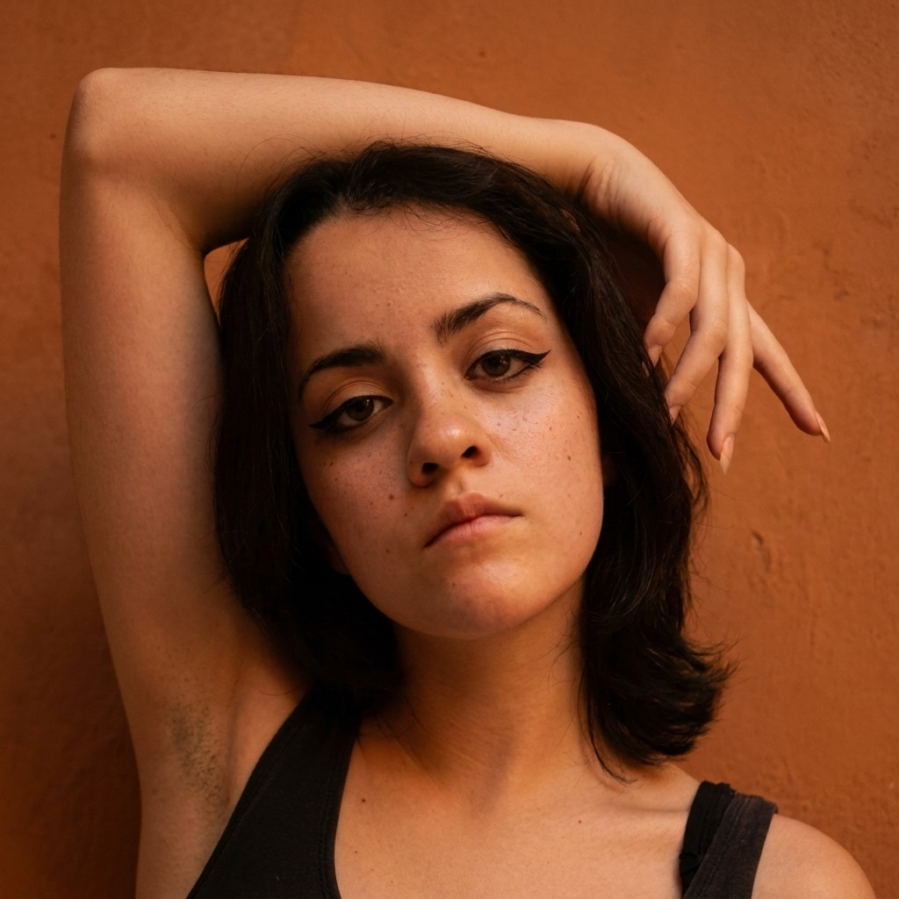
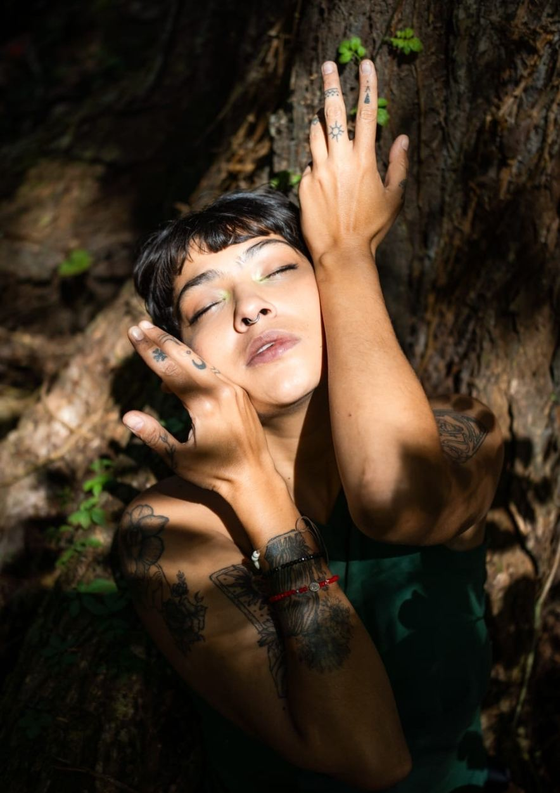

¿Que es DERIVA?
Deriva es un encuentro multidisciplinar de 5 días en Zipolite que propone el cuerpo como territorio central para explorar la conciencia emocional. A través de un ciclo vivencial que integra movimiento experimental, escritura expandida, exploraciones de movimiento en el agua y contacto consciente, los participantes son invitados a reconocer, registrar y comprender sus vivencias emocionales de forma tangible — desde la experiencia directa del cuerpo, no desde la teoría —.
Estructurado alrededor de las cinco ondas cerebrales, cinco sentidos y cinco redes de respiración. Fundamentado en la psicología transpersonal y la neurociencia, cada jornada propone una profundidad y una forma distinta de habitar la experiencia.
Las disciplinas no operan como talleres independientes sino como fases de un mismo ciclo: activar, registrar, profundizar y comprender. Deriva no es un espacio terapéutico ni de sanación. Es un laboratorio lúdico de reconocimiento emocional — un lugar para comprender cómo sentimos sin restringir las vivencias entre agradables o desagradables exclusivamente, sino desde la empatía, la curiosidad y el goce colectivo.
Cinco frecuencias, cinco días
Lo que DERIVA te ofrece...
DERIVA de un ciclo, un cuerpo
El diseño del encuentro se fundamenta en la psicología transpersonal y la neurociencia como marcos teóricos para pensar el cuerpo, las emociones y los estados de conciencia. Desde esta perspectiva, el cuerpo se entiende como un territorio integral —físico, emocional, creativo y relacional— donde convergen las diferentes disciplinas del encuentro.
Cada jornada activa una onda cerebral distinta —alfa, theta, beta, gamma, delta—, acompañada de un sentido y una técnica de respiración, con el objetivo de explorar tu cuerpo como un mapa emocional intimo, consiente y empático. Indagaremos a través de 3 laboratorios: Movimiento Experimental, Escritura Expandida y Movimiento Acuático.
Las técnicas de movimiento, respiración, escritura y contacto no funcionan como talleres independientes sino como fases de un mismo ciclo de indagación: activar, registrar, profundizar y comprender, ofreciendo un mapa de estados que los participantes pueden reconocer y activar más allá del encuentro.
Un encuentro para tu sentir
No necesitas experiencia previa en danza, teatro, escritura, meditación ni movimiento. Solo un cuerpo dispuesto a reconocerse y explorarse.
El encuentro está dirigido a cualquier persona interesada en explorar su relación con el cuerpo emocional. Para estudiantes de danza y teatro, artistas escénicos, terapeutas, personas neurodivergentes, o cualquiera en un proceso personal sensible que busque una herramienta práctica para conectar con su inconsciente desde el cuerpo.
Te llevas un mapa fundamentado en movimiento, respiración y neurociencia.
¡Sumérgete a través de 3 laboratorios!
Laboratorio: Movimiento Experimental
Sesiones de indagación corporal en colectivo que fusionan danza butoh, contact, movimiento somático y psicorporal, teatro físico, teatro danza, improvisación, meditación en movimiento y respiración no binaria. El objetivo del laboratorio es poder explorar los estímulos que se generan desde un cuerpo consciente de sus necesidades y movimientos para reconocer qué canales-redes mentales y corporales interconectamos al momento de navegar nuestras emociones de manera consciente; descubrirás como liberar emociones atrapadas, explorar tu consciencia y reconectar contigo a través del movimiento.
TRES EJES, UN SOLO CAMINO DE REGRESO:
En cada sesión del laboratorio exploraremos a partir de...
Laboratorio: Escritura Expandida
El momento de registrar: donde lo que el cuerpo activa en movimiento se convierte en palabra. Reconoce la escritura como eje transversal en la creación, priorizando la experiencia del proceso creativo y la construcción colectiva, fomentando un espacio de escucha, experimentación y registro compartido. A través de este laboratorio, exploraremos:
El cuerpo como soporte poético
La emoción como materia de creación
El movimiento como detonador de escritura
La escritura desde lo sensorial/vivencial
Mediante ejercicios de activación sensorial, prácticas de escritura no lineal desde el cuerpo y exploraciones entre movimiento, palabra, imagen y sonido, los participantes producirán una huella colectiva: un texto expandido que integre la experiencia compartida.
No es diario íntimo: es bitácora de campo sobre uno mismo. Te llevarás una bitácora personal y participrás en la huella colectiva: un texto expandido que el grupo escribe con el cuerpo y queda como constancia del proceso compartido.

Activación sensorial, escritura no lineal desde el cuerpo, exploración entre movimiento, palabra, imagen y sonido. La palabra que nace del gesto, no del pensamiento.
Cada jornada deja un registro: sensación, intensidad, zona del cuerpo, frecuencia. No es diario íntimo: es bitácora de campo sobre uno mismo.
Te llevas la bitácora personal y participas en la huella colectiva: un texto expandido que el grupo escribe con el cuerpo y queda como constancia del proceso compartido.
Laboratorio: Movimiento Acuático
A través de la entrega al agua y recepción del contacto consciente, accederemos a capas de la experiencia que el movimiento
activo no alcanza por si solo.
En el contexto de la atención plena, el agua sirve de vínculo simbólico y tangible con nuestro ser interior. Al alinearnos
con las propiedades del agua -fluidez, adaptabilidad y tranquilidad- canalizamos su energía curativa y espiritual,
fomentando una profunda sensación de paz y conexión.
Un solo ciclo en cinco jornadas
Dos cuerpos que ya hicieron el viaje

-->
Shaila Silva
Movimiento experimental · eje central
Intérprete interdisciplinaria e investigadora en el Centro de Investigación Coreográfica del INBAL. Teatro físico, danza contact, butoh, movimiento somático, respiración no binaria y teatro lúcido, articulados con neurociencias, farmacología y psicología transpersonal. Certificada en Teleki-Ho (Oxilion, 2022).
Silvia Maytorena
Cuerpo escritural · escritura expandida
Licenciada en Artes Escénicas (UniSon), +10 años en procesos interdisciplinarios y comunitarios. Primer lugar Liga Estatal de Slam Poetry Sonora 2025 y subcampeona nacional. Estudios de maestría en Teatro Interdisciplinar y Artes Vivas (U. Nacional de Colombia). Tres libros publicados.
Camp Zipolite · Bahía Camarón
Camp Zipolite es un espacio de retiros y centro cultural a pasos de Bahía Camarón. Fundado por un equipo interdisciplinario de arquitectura, arte y salud, integra bienestar, comunidad y cultura. Seguro, inclusivo, LGBTQ+ friendly — diseñado para conectar residentes con el contexto local y el entorno natural.
Camp Zipolite, centro cultural y espacio de retiros a pasos de Bahía Camarón. Entorno seguro, inclusivo y LGBTQ+ friendly.
Cabañas compartidas de bambú y palapa. Ropa de cama incluida. Alberca climatizada, terraza de práctica y zonas comunes.
Comida vegetariana de inspiración turca al mediodía —falafel, hummus, pan pita, ensaladas frescas— y SnackBar abierto durante toda la jornada. Alimento pensado para cuerpos que exploran.
Vuelo a Huatulco (HUX, ~1h20) o Puerto Escondido (PXM, ~1h30). Coordinamos traslado compartido con el grupo.
El lugar y quienes lo habitan
Inversión · $6,800 MXN
Deriva es un encuentro de acompañamiento intensivo: 15 personas, dos facilitadoras, cinco días. La inversión cubre los tres laboratorios, el hospedaje en Camp Zipolite, una comida vegetariana turca diaria y SnackBar continuo. Aceptamos meses sin intereses, transferencia y planes de pago a convenir — si el dinero es lo único que te detiene, escríbenos.
Lo que sostiene el encuentro por debajo. Se abre solo si lo buscas — y cada palabra subrayada de las secciones anteriores aterriza aquí.
A1 · Psicología transpersonal Más allá del yo, de vuelta al cuerpo Marco teórico del encuentro
La psicología transpersonal es la rama que estudia los estados de conciencia que trascienden la identidad personal: meditación, trance, éxtasis, insight. Iniciada por Stanislav Grof, Abraham Maslow y Anthony Sutich en los 60. En Deriva la usamos como marco de referencia — no como dogma — para pensar el cuerpo, las prácticas creativas y meditativas, y el contacto.
Deriva no es un espacio de sanación ni terapia. Es un laboratorio lúdico de reconocimiento emocional. Un lugar para comprender cómo sentimos sin restringir las vivencias entre agradables o desagradables — desde la empatía, la curiosidad y el goce colectivo.
A2 · Elementos de mapeo Cómo se registra lo que el cuerpo dice Dinámicas de trabajo · dispositivos concretos
No basta con sentir. Deriva propone herramientas concretas para que la vivencia no se disuelva al terminar el encuentro. Te llevas dispositivos — no ideas — que puedes usar en tu cotidianidad.
Mapa corporal
Cartografía personal donde marcas dónde se siente cada emoción. Se actualiza cada día.
Redes de respiración
5 patrones respiratorios asignados a los 5 sentidos. Los llevas escritos y practicados.
Diario de ondas
Registro diario del estado cerebral predominante — para reconocerlo después del encuentro.
Huella colectiva
Texto expandido co-creado por el grupo. Recibes copia impresa al final.
A3 · Bitácora Un cuaderno que te llevas Registro personal · trabajo escrito, dibujado, marcado
La comida es parte del encuentro, no un trámite. Camp Zipolite prepara diariamente una comida vegetariana de inspiración turca al mediodía —falafel, hummus, pan pita, ensaladas frescas— y mantiene un SnackBar disponible durante toda la jornada. Alimentación concebida literalmente «para cuerpos que exploran»: ligera antes de moverse, sustanciosa después.
Comida turca · mediodía
Falafel, hummus, pan pita, çoban salatası, ensaladas frescas de temporada. Todos los días.
SnackBar
Fruta local, infusiones, frutos secos, agua fresca. Abierto toda la jornada, sobre todo entre laboratorios.
Vegetariana por diseño
Toda la cocina del encuentro es vegetariana. Opciones veganas y sin gluten bajo aviso previo.
Cena y convivencia
El día 1 cierra con cena y convivencia integradora. El resto de las cenas se coordinan en grupo (Zipolite tiene cocina local a pasos).
A4 · Alimentos Porque comer es otra experiencia sensorial Snack bar abierta durante toda la jornada de movimiento. Comida turca vegetariana al medio día. Alimento pensado para cuerpos que exploran.
A5 · Inquietudes constantes Lo que se pregunta antes de llegar Preguntas frecuentes
A6 · Respiración no binaria Teleki-Ho · viajar por la vibración del pensamiento 6 formas de trabajar oxígeno · CO₂ · 5 redes sensoriales
El Sistema de Flujo Teleki-Ho es una práctica de meditación activa que integra flujos corporales, mentales y afectivos como trance consciente. Explora las cualidades del movimiento — energía, espacio, tiempo — y las propiedades de la materia mediante la respiración. No es respirar más profundo. Es respirar de otra manera.
A eso lo llamamos inestesia: cuando un sentido se mezcla con otro. Escuchar colores. Sentir sonidos. Oler texturas. El objetivo no es raro: es ampliar el rango de lo perceptible para que las emociones dejen de ser algo abstracto y se vuelvan legibles en el cuerpo.